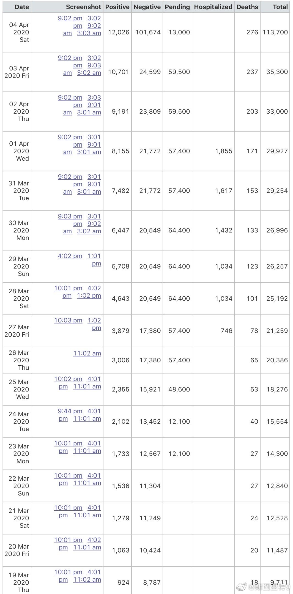

既上星期旧金山纪事报报道因为常规手术暂停造成很多护士失业之后，今天又报道Alamada县（奥克兰、伯克利等地所在的县）因为居家令造成救护车需求减少，救护车公司打算停止给一些员工发工资。网页链接 谁能想象疫情竟然让一些护士和救护车公司的员工失业？
加州的统计数字，10天前突然增加三万多的“pending”，而昨天突然四万多的pending转为阴性。这说明加州的数字确实质量有问题。很可能是和一些商业检测部门信息共享不够通畅有关。我们看到，确诊率其实是依然保持在10%的。 
 网页链接 ICU病床大概还有一倍的冗余量，呼吸机使用了1/3。
网页链接 ICU病床大概还有一倍的冗余量，呼吸机使用了1/3。